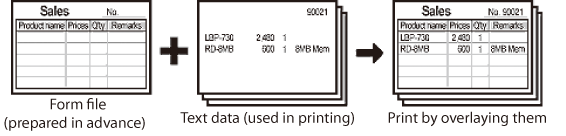

This option enables you to overlay text data onto a form file. The form file must be created and stored in the printer beforehand. When the form file is ready, you can overlay other documents on the form file. For example, if the format of a report or bill is created in application software as a form file, you can create a perfectly formatted document by overlaying a text data document onto the form file.

For overlay printing, the following two procedures are required. Firstly, create and store image data in the printer as a form file. Then, use the created form file for overlay printing.
|
NOTE
|
|
Depending on the printer model you are using, this option may not be available.
|